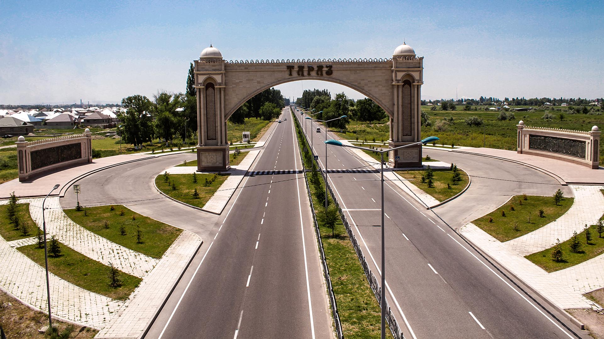
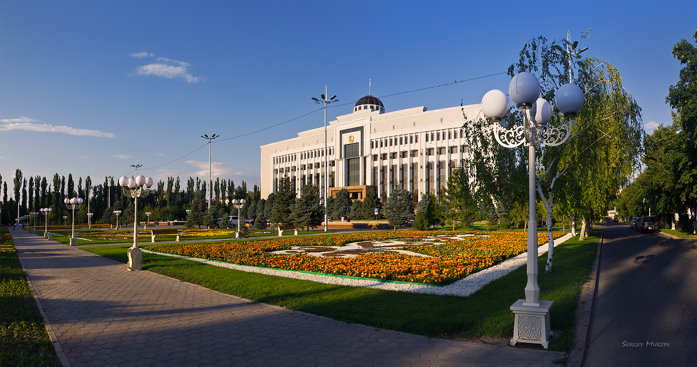

Central Asia has lot of ancient cities, architecture, buildings, Bazaars, towers and what not. In Central Asia, Kazakhstan has lot of ancient places too. One of them is Taraz City. Taraz city is one of the oldest cities in Kazakhstan. Taraz is ancient but Taraz is modern too. Today Taraz is a beautiful mix of ancient and modern touch. One of the fastest growing cities after Astana is Taraz city. The age of Taraz is like this. The city celebrated its 2000th anniversary in 2001. Between the old and modern Tarza is a beautiful destination for travelers. When you are on Kazakhstan tour then Taraz should be automatic choice for you to visit. Taraz had its first recorded name in 568 CE as “Talas”. In the medieval time Talas was a major trade center on the Silk Road. Let us Explore Taraz with some interesting facts.

Taraz is also known as Talas to Europeans. Located on the Talas or Taraz river in south of Kazakhstan bordering with Kyrgyzstan, Taraz has population of over 300,000. The city is a fast growing one in Kazakhstan and has lot to offer to the visitors. Taraz finds its place in history for the war of Talas in 751 CE fought beween forces of Chinese Tang dynasty and forces of Arab Abbasid Caliphate along the Talas River in the Talas valley. Archaelogists present enough materiel to prove that Taraz is most ancient city in Kazakhstan. The city saw many interruptions and depopulation on different time intervals. Chest ornaments, Bronze statues of the kings, remnants of ceramic product found from Talas river valley proves the fact that Taraz had existence of life in Bronze epoch. Many other archaeological excavations and available written sources prove that Taraz had life existence since ancient times. You should experience the oldness of the city not only by reading written texts about Taraz but by being there yourself. Taraz went through several phases of history where different rulers ruled this place. The Karkhanids, Mongols, Kazakh rule, Qing role, Russian rule and then independence after break up of Soviet Union, Taraz saw it all at different times.
In the modern time Taraz is changing rapidly. The look of the city has changed. An improvement programmer for high rise house courtyard and the appearance of Taraz residential districts is upgrading continuously. Taraz has architectural enrichment. Sculptures of outstanding historic figure of Kazakh people and modern street sculptures, both find places in the city beautifully. One of the modern sculptures is that of sculptural composition dedicated to the movie stars of “Gentlemen of Fortune”. There are many other places for travelers to see. Two mausoleum in Taraz really presents the richness of past of Taraz. One is mausoleum of Aulie Ata Karahan which was built in 11th century and another Sha Mansur erected in 13th century. First made over grave of one of the rulers from Karkhanid dynasty and second was made over the grave of one of the Mongol Khan governors. Just 18 KM from Taraz and there is this Aisha Bibi village. In the village there are two monuments which are quite popular not only for archaeologists but for tourists as well. Aisha Bibi mausoleum is though a small place but interesting one for tourists. Aisha Bibi mausoleum was built in 12th century and is fully decorated with tiles with various samples of patterns and inscription. One tower in the corner f this mausoleum has one of the old distichs which reads “Autumn, Clouds, The Earth is beautiful”. There is Babaji Khatun mausoleum that was built in 11th century and the mausoleum is quite famous for its sixteen ribbed unique conical dome.

Taraz is a buzzing city with lot of old touch. Tourists can see elements of ancient times here in mausoleums and architectures while new places are worth visiting as well. After Astana, Taraz should be on your list in Kazakhstan to go to. Are you planning to take a Kazakhstan Travel Package then keep Taraz city as your must see places in Kazakhstan.